版权申明：本文为博主窗户(Colin Cai)原创，欢迎转帖。如要转贴，必须注明原文网址
http://www.cnblogs.com/Colin-Cai/p/11938885.html
作者：窗户
QQ/微信：6679072
E-mail：6679072@qq.comEDA是个很大的话题，本系列只针对其中一小部分，数字电路的仿真，叙述一点概念性的东西，并不会过于深入，这方面的内容实则是无底洞。本系列并不是真的要做EDA，按照SICP里的相关内容，采用Lisp的方言Scheme。再者，Lisp并不是只有函数式一种编程范式，真正做EDA，仿真的核心部分为了运行效率可以采用C/C++编写，编程的思路也可以借鉴。
门级电路
学过数字电路，我们都知道与、或、非三个门。虽然从实际上真实电路的角度来说，与非门、或非路一般比起与、或门更为简单，但一般情况下我们可能更喜欢从与、或、非说起。
与、或、非这三个门级的逻辑符号如下：
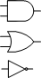
与门的真值表如下：
| 输入1 | 输入2 | 输出 |
| 真 | 真 | 真 |
| 假 | 真 | 假 |
| 真 | 假 | 假 |
| 假 | 假 | 假 |
或门的真值表如下：
| 输入1 | 输入2 | 输出 |
| 真 | 真 | 真 |
| 假 | 真 | 真 |
| 真 | 假 | 真 |
| 假 | 假 | 假 |
非门的真值表如下：
| 输入 | 输出 |
| 真 | 假 |
| 假 | 真 |
除此之外还有异或门、同或门比较常用，符号如下：
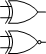
异或门的真值表如下：
| 输入1 | 输入2 | 输出 |
| 真 | 真 | 假 |
| 假 | 真 | 真 |
| 真 | 假 | 真 |
| 假 | 假 | 假 |
同或门的真值表如下：
| 输入1 | 输入2 | 输出 |
| 真 | 真 | 真 |
| 假 | 真 | 假 |
| 真 | 假 | 假 |
| 假 | 假 | 真 |
组合电路
将以上的门级电路连在一起，得到组合电路。前提是，组合电路没有反馈。
解释一下反馈的意思,
如果将组合电路看成一个有向图，有向图的顶点为各组短接在一起的导线，边为每个门级上的输入到输出。
比如
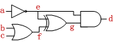
在以上定义下，上面电路图所对应的有向图有7个顶点，a,b,c,d,e,f,g，边为<a,e>，<b,f>，<c,f>，<e,g>，<f,g>，<e,d>，<g,d>。
如果有向图没有环，则该组合电路没有反馈。
那么有没有有反馈的电路呢？举一个例子如下：
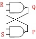
四条边<R,Q>，<P,Q>，<Q,P>，<S,P>中<P,Q>和<Q,P>组成了一个环，这就是反馈，产生了时序方面的东西，就不是组合电路了。实际上，这是一个RS触发器。
组合电路的描述
以上的电路图当然描述了电路，只是，处于仿真的需要，我们需要更为精确而简洁的信息。
我们可以把上述电路图中的顶点提出来，称为wire。
比如对于verilog,我们可以用以下来门级描述(实际上verilog可以有几种看起来完全不一样的RTL描述方式)：
wire a;
wire b;
wire c;
wire d;
wire e;
wire f;
wire g;
not u1(e, a);
or u2(f, b, c);
xor u3(g, e, f);
and u4(d, e, g);
以上显然不符合Scheme的S-表达式，我们采用define，用定义变量的手段定义各个wire：
(define a (make-wire))
(define b (make-wire))
(define c (make-wire))
(define d (make-wire))
(define e (make-wire))
(define f (make-wire))
(define g (make-wire))
make-wire是函数，而各个wire用变量来表示。
用门将各个wire连起来，
(not-gate e a)
(or-gate f b c)
(xor-gate g e f)
(and-gate d e g)
not-gate、or-gate、xor-gate、and-gate都是用函数来表示门级，甚至于，我们可以通过与、或、非三个门来定义其中用异或门。
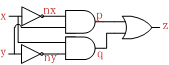
上面就是用与、或、非门实现的异或门，verilog实现如下：
module xor_gate(
output z,
input x,
input y);
wire nx;
wire ny;
wire p;
wire q;
not u1(nx, x);
not u2(ny, y);
and u3(p, nx, y);
and u4(q, x, ny);
or u5(z, p, q);
endmodule
Scheme仿真也一样可以引入模块建构能力，按照上面Scheme的描述，不难写出xor-gate的Scheme函数实现应该如下:
(define (xor-gate z x y)
(let ((nx (make-wire))
(ny (make-wire))
(p (make-wire))
(q (make-wire)))
(begin (not-gate nx x)
(not-gate ny y)
(and-gate p nx y)
(and-gate q x ny)
(or-gate z p q))))
仿真
组合电路的仿真在于给定每个输入的信号，然后得到输出的信号，仿真比较简单，
为了达到这个目的，我们可以定义一个set-signal函数，用于给wire设置信号，高低电平我们一般用1、0表示。
比如，我们将a、b、c设为0、1、0，
(set-signal a 0)
(set-signal b 1)
(set-signal c 0)
再给个仿真函数sim用于推理出信号的值，不需要返回值，但逻辑上是做了信号的推理。
比如对于我们的需要来说，我们最终是为了观察信号g，那么我们可以执行
(simulate g)
最后，我们可以再通过get-signal来获取想要观察的信号，
(get-signal g)
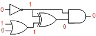
对于这个电路，以及上述的输入信号，(get-signal g)会返回0。
实现
以上的仿真中，所有的wire都是变量，并且构建电路时使用函数。如果是纯函数则不会影响全局的环境，只有改变了变量这样的副作用发生，上面构建电路方法才是有效的。上述迹象表明，此时使用的绝对不是函数式编程。表示wire的变量显然承载了整个电路的所有信息，并且随时可以通过门电路函数让任意两个wire变量产生联系。我们可以通过序偶来实现这一切。
所有的Lisp里，最常用的手法当然是使用序偶(pair)来表示一切(其实Lisp也就是List Processing,list也是一种序偶)，序偶也是数学里很基本的概念，用来表示有序的一对数据，所谓有序，意思就是序偶中的两个数据分前后，这和两个数据组成的集合不同。Scheme为序偶准备了三个函数：cons，car，cdr。cons用于生成一个序偶，car用于取序偶的第一个数据，cdr用于取序偶的第二个。
> (define s (cons 1 2))
> s
(1 . 2)
> (car s)
1
> (cdr s)
2
Lisp里的pair，像'(1 . 2)这样一个pair是以下这样的结构
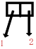
这两个箭头代表的是，序偶里前后两个存的是值的引用，而不是值。这一点非常重要，利用这个性质可以构造很多的数据结构，比如最简单的列表(或者也可以叫链表)。
比如列表 '(1 2 3)实际上是'(1 . (2 . (3 . ())))，也就是如下图这样的结构
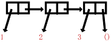
既然pair里存的是引用，Scheme早在最早的标准中就规定了set-car!和set-cdr!用于修改pair中所存储的两个引用，以此实现各种复杂的数据结构。我们使用set!似乎做到，比如可以这样写，
(define (my-set-car! v x) (set! v (cons (car v) x)))
(define (my-set-cdr! v x) (set! v (cons x (cdr v))))
但是set-car!和set-cdr!实现的颗粒可以更加的细，上述的my-set-car!和my-set-cdr!需要重新构建序偶，会破坏数据结构。
然后，我们可以考虑如何表示电路的数据结构了。
我们可以考虑用一个pair来表示wire，这个pair的第一个对象用来代表逻辑值，第二个对象用来代表wire的连接关系。
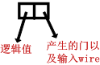
而原来电路
可以用以下这样的数据结构来表示：
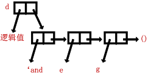
每个wire都对应着这样的一个结构，如果是一个门(只限于与、或、非)的输出，那么右边就是这样的一个列表，列表第一个表元指向门的类型(用symbol表示)，后面的表元指向各个输入的wire；而如果这wire是整个电路的输入信号，右边则指向空列'()。
于是整个组合电路的数据结构就对应于上述定义下的一个图（图比较复杂，略）。
用个相对简单的电路来表示一下整个数据结构：
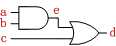
其数据结构如下：
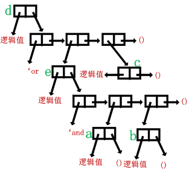
当我们用make-wire建立一个wire的时候，其逻辑值未定，wire也未与任何门相连，于是我们可以让这个pair的第一个元给个默认逻辑值0，第二个元指向空列，即
(define (make-wire) (cons 0 '()))
注意，后面是(cons 0 '())，而不能是已经构造好的'(0)，这样，每次返回的才是不同的pair，这一点是必须的，而且是可能出错的地方。
set-signal和get-signal这两个函数用于设置、获取wire的信号，显然就是对pair的第一个元素进行操作，于是很简单就可以实现
(define (set-signal x v) (set-car! x v))
(define (get-signal x) (car x))
与或非门的实现，比如与门
实际上就是先造出列表来表示门和各个输入信号，然后再操作pair的第二个元素指向这个列表。
对于非门只会有一个输入信号，
(define (not-gate x y) (set-cdr! x (list 'not y)))
而对于与、或门，会有多个输入信号(可能不只两个)，于是我们用可变参数的写法了。
(define (and-gate x . input-list) (set-cdr! x (cons 'and input-list)))
(define (or-gate x . input-list) (set-cdr! x (cons 'or input-list)))
注意这里，input-list是输入信号列表，本来就是列表，所以只需要用cons把'and或者'or接在前面即可造出需要的完整列表了。
其实，通过这么一个图，我们也很容易看出信号仿真很明显就是一个递归。
计算一个wire的逻辑值，则看它的第二个元是不是空表：
如果是，则代表这个wire肯定是整个电路的输入信号，没有其他门的依赖，所以不用计算；
而如果不是，则一定是某个门的输出，于是先计算出每个输入的信号，再最后计算值。
用代码来写就是如下了：
(define (sim s)
(if (null? (cdr s));第二个元指向的是不是一个空表
(do-nothing);如果是空表，则不需要计算了
(begin
(for-each sim (cddr s));挨个去计算每一个输入信号
(case (cadr s);看一下是什么门
((not);非门
(if (zero? (caaddr s))
(set-car! s 1)
(set-car! s 0)))
((and);与门
(set-car! s (cal-and (cddr s))))
((or);非门
(set-car! s (cal-or (cddr s))))
(else (do-nothing))))))
cal-and和cal-or也很容易用递归实现，而不是用fold，因为以下效率比起fold每个都算还较高一些：
(define (cal-and wires)
(cond
((null? wires) 1)
((zero? (caar wires)) 0)
(else (cal-and (cdr wires)))))
(define (cal-or wires)
(cond
((null? wires) 0)
((eq? 1 (caar wires)) 1)
(else (cal-or (cdr wires)))))
而do-nothing函数，Chez上可以用void。
变量作用域问题
我们上面用到的都是全局变量，很多时候我们或许不想污染全局环境。于是我们可以采用面向对象的方式，很多语言都可以直接在语言层次上支持。Lisp作为弹性十足的语言，有多种方式来支持面向对象。
问题简单化一点，我们就设想一个银行卡的简单系统，支持存钱、取钱、查看钱、查看历史四个操作，为了简单起见，我们不去管利息，取钱也可以任意取，不用担心透支。
(define (make-card q history)
(lambda s
(case (car s)
((存款)
(begin (set! q (+ q (cadr s)))
(set! history (cons (list q '存款 (cadr s)) history))
q))
((取款)
(begin (set! q (- q (cadr s)))
(set! history (cons (list q '取款 (cadr s)) history))
q))
((查余额) q)
((查历史) (reverse history))
((else) '()))))
以上就是Scheme天然支持一种方式的面向对象，make-card函数就是为了产生对象，所谓对象就是构造了一个环境，其中q、history是对象的属性，而存款、取款、查余额、查历史则是对象的方法。所有的处理都在对象的内部，不会影响到全局环境。
我们测试一下，
(define id-1 (make-card 0 '()));产生一个对象
(id-1 '存款 1000)
(id-1 '存款 2000)
(id-1 '取款 500)
(id-1 '存款 3000)
(display (format "余额: ~a" (id-1 '查余额)))
(newline)
(display "历史:")
(newline)
;查看所有的历史
(for-each
(lambda (x) (display (format "~a~a 余额: ~a" (cadr x) (caddr x) (car x)))(newline))
(id-1 '查历史))
运行一下，结果如下：
余额: 5500
历史:
存款1000 余额: 1000
存款2000 余额: 3000
取款500 余额: 2500
存款3000 余额: 5500
这样的思路完全可以用来改造上述的仿真。
其他问题
然而，我们可能还是会去想，
(for-each sim (cddr s))
面对一个门，算出它每一个输入，是不是应该如此。其实显然不需要如此，上面这两个cal-and和cal-or函数之所以不用fold就已经是优化了。
然而，任何情况下，整个电路里所有的wire都被计算了，实际上，很多情况可能不需要计算这么多。
比如
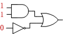
根本不需要计算下面非门的输出信号，就可以知道最终信号是1。
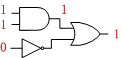
另外，还有信号重复计算问题,比如
其中e可能面临着两次计算。
这些问题如何解决呢？当然，这已经上升到算法问题了，脱离了本章的主题，这里并不再给出答案，留给有兴趣的读者自己去考虑。